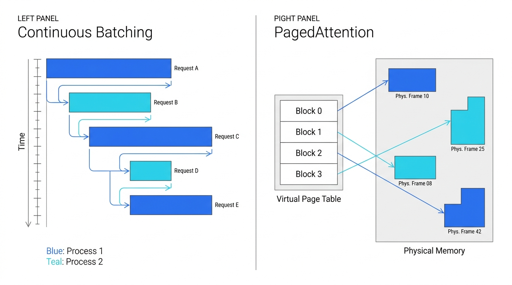

大模型推理 & Inference-Time Scaling
《大语言模型》课程讲座
Part 1 推理为什么昂贵？ · Part 2 如何让推理更快？ · Part 3 花更多计算反而更好？
一个事实：推理（Inference）占生产环境中 ML 总计算量的 90% 以上。
训练花费数百万美元、做一次；推理每天执行数十亿次。
从序列建模到 Attention
Part 1
RNN 的瓶颈
- 隐状态 \(h_t = f(h_{t-1}, x_t)\) 必须顺序计算
- 长距离依赖：梯度消失/爆炸
- 信息瓶颈：所有历史压缩到固定维度 \(h_t\)
Attention 的核心思想
- 每个位置直接访问所有其他位置
- 用"查询-键"匹配决定关注哪里
- 不再受限于固定维度的瓶颈
Q / K / V 直觉
Query (Q)："我在找什么？"
Key (K)："我有什么信息？"
Value (V)："我的具体内容是什么？"
类比图书馆：
Q = 你的搜索词
K = 每本书的索引标签
V = 书的内容
Q·K 匹配度越高 → 越多地"阅读"该书的 V
Self-Attention 机制
Part 1
$$\text{Attention}(Q, K, V) = \text{softmax}\!\left(\frac{QK^\top}{\sqrt{d_k}}\right) V$$
计算步骤
- \(QK^\top\)：计算所有 token 对之间的相似度
- \(\div \sqrt{d_k}\)：缩放防止 softmax 饱和
- softmax：归一化为注意力权重（概率分布）
- 乘以 \(V\)：加权汇聚信息
Multi-Head Attention
多组独立的 Q/K/V 投影 → 捕获不同类型的关系
$$\text{head}_i = \text{Attention}(QW_i^Q, KW_i^K, VW_i^V)$$
$$\text{MHA} = \text{Concat}(\text{head}_1, \dots, \text{head}_h) W^O$$
典型配置：\(h = 32\), \(d_k = d_{\text{model}} / h = 128\)
自回归生成
Part 1
$$P(x_{1:T}) = \prod_{t=1}^{T} P(x_t \mid x_{<t})$$
训练 vs 推理
| 训练 | 推理 |
|---|
| 输入 | 完整序列 | 逐 token 生成 |
| 并行度 | 所有 token 并行（Teacher Forcing） | 严格串行 |
| 前向传播 | 1 次 | \(T\) 次 |
关键瓶颈
生成 \(T\) 个 token 需要 \(T\) 次前向传播。
每次只产出 1 个 token，但需访问所有历史信息 → 计算效率极低。
词表大小 \(|V| \sim\) 32K–128K：每步在整个词表上计算概率分布。
KV Cache：用空间换时间
Part 1
为什么能缓存？
- 因果掩码：token \(t\) 只看位置 \(1, \dots, t\)
- 因此 \(K_i, V_i\)（\(i < t\)）在生成 token \(t\) 时不会改变
- 缓存已计算的 K、V → 每步只需计算新 token 的 \(Q_t, K_t, V_t\)
复杂度对比
| 无 KV Cache | 有 KV Cache |
|---|
| 第 \(t\) 步 | \(O(t \cdot d)\) | \(O(d)\) 计算 + \(O(t \cdot d)\) 读取 |
| 总计 | \(O(T^2 \cdot d)\) 重复计算 | \(O(T \cdot d)\) 计算 |
显存：\(\text{KV} = 2 \times L \times d \times s \times b \times p\)
（\(L\)=层数, \(d\)=维度, \(s\)=序列长, \(b\)=批大小, \(p\)=精度字节）
70B 实例：\(L{=}80, d{=}8192, s{=}4096, b{=}1, p{=}2\) → ~10 GB/序列；100 并发 → 1 TB！
两阶段推理：Prefill 与 Decode
Part 1
Prefill（预填充）
- 处理完整输入 prompt，并行
- 操作：矩阵-矩阵乘（GEMM）
- \(W \times X\)，其中 \(X \in \mathbb{R}^{d \times n_{\text{prompt}}}\)
- 算术强度 \(\sim O(d)\) → 计算瓶颈
- GPU 利用率高
Decode（解码）
- 逐 token 生成，串行
- 操作：矩阵-向量乘（GEMV）
- \(W \times x_t\)，其中 \(x_t \in \mathbb{R}^{d \times 1}\)
- 算术强度 \(\sim O(1)\) → 访存瓶颈
- GPU 利用率极低
| Prefill | Decode |
|---|
| 运算类型 | GEMM（矩阵×矩阵） | GEMV（矩阵×向量） |
| 瓶颈 | 算力（Compute） | 带宽（Memory BW） |
| 批维度 | \(n_{\text{prompt}}\)（大） | 1（单 token） |
| 延迟指标 | TTFT | TBT |
Roofline 模型：量化推理瓶颈
Part 1
$$\text{可达性能} = \min\!\big(\text{峰值算力},\ \text{峰值带宽} \times I\big), \quad I = \frac{\text{FLOPs}}{\text{Bytes}}$$
算术强度分析
- GEMM（Prefill）：\(I \approx O(d)\) → 远高于平衡点
- GEMV（Decode）：\(I \approx O(1)\) → 远低于平衡点
A100 参数
| 峰值算力 | 312 TFLOPS (FP16) |
| HBM 带宽 | 2 TB/s |
| 平衡点 | ~156 FLOPs/byte |
Decode 阶段 GPU 算力严重闲置，受限于显存带宽下界
延迟指标：TTFT 与 TBT
Part 1
TTFT（Time To First Token）
- 从收到请求到输出第一个 token 的时间
- 由 Prefill 阶段主导
- 用户感知："多久开始有回复？"
- 交互式应用目标：< 1 秒
TBT（Time Between Tokens）
- 连续输出 token 之间的时间间隔
- 由 Decode 阶段主导
- 用户感知："文字流出多快？"
- 目标：< 50ms（~20 tokens/s，快于阅读速度）
端到端延迟
$$T_{\text{total}} = \underbrace{T_{\text{TTFT}}}_{\text{Prefill}} + \underbrace{T_{\text{TBT}} \times n_{\text{output}}}_{\text{Decode}}$$
吞吐量 vs 延迟
吞吐量（tokens/s/GPU）：系统效率指标
延迟（TTFT, TBT）：用户体验指标
两者常常矛盾：增大批处理提高吞吐量，但可能增加延迟。
小结：推理为什么昂贵？
Part 1
-
自回归解码本质串行：生成 \(T\) 个 token 需要 \(T\) 次前向传播
-
KV Cache 占用巨量显存：70B 模型单序列 ~10 GB
-
Decode 阶段访存瓶颈：GPU 算力严重闲置，受限于显存带宽
-
模型越大、序列越长，问题越严重
那么，我们能做些什么来优化推理？ →
Part 2: 推理优化技术
如何让推理更快、更便宜？
模型压缩
量化 · 蒸馏 · 剪枝
算法加速
推测解码
系统优化
批处理 · 内存管理
量化：降低精度，加速推理
Part 2
核心思想
- FP16 → INT8：2× 显存缩减，2× 带宽提升
- FP16 → INT4：4× 显存缩减
- Decode 是访存瓶颈 → 减少字节数直接加速
量化误差
\(\|\boldsymbol{W}\boldsymbol{x} - \hat{\boldsymbol{W}}\boldsymbol{x}\|\)：
并非所有权重同等重要——异常值通道导致不成比例的误差。
代表性方法
GPTQ (Frantar et al., 2023)
- 逐层量化，最小化平方误差
- 利用 Hessian 信息（二阶方法）决定量化顺序
- 更重要的权重获得更精确的量化
AWQ (Lin et al., 2024)
- 激活感知：根据激活幅值保护关键通道
- 大激活值对应的权重 → 用更高精度
- 实测 INT4 与 FP16 质量差距极小
Frantar et al. "GPTQ" (2023) · Lin et al. "AWQ" (2024)
推测解码：用小模型加速大模型
Part 2
核心思想
- 草稿模型 \(M_q\)（小而快）：快速猜测 \(\gamma\) 个 token
- 目标模型 \(M_p\)（大而准）：一次性并行验证全部候选
- 验证通过 → 接受；验证失败 → 从该位置重新采样
关键洞察：\(M_p\) 验证 \(\gamma\) 个 token 的代价 ≈ 生成 1 个 token（类似 Prefill）
流程示意
一次迭代 = \(\gamma\) 次快速串行 + 1 次并行验证
若接受率高 → 一轮得到多个 token
Leviathan et al. (2023) · Chen et al. (2023)
推测解码的正确性证明
Part 2
修改拒绝采样
对每个草稿 token \(x \sim q(x)\)：
接受概率：$\alpha(x) = \min\!\left(1,\; \frac{p(x)}{q(x)}\right)$
若拒绝，从调整分布重采样：
证明 \(P(\text{output} = x) = p(x)\)
情况 1：\(p(x) \leq q(x)\)
\(P = q(x) \cdot \frac{p(x)}{q(x)} + Z \cdot 0 = p(x)\) ✓
情况 2：\(p(x) > q(x)\)
\(P = q(x) \cdot 1 + Z \cdot \frac{p(x)-q(x)}{Z} = p(x)\) ✓
两种情况均得到 \(p(x)\)。
推测解码精确恢复目标分布——零近似误差。
推测解码的加速分析
Part 2
期望 token 数
设平均接受率为 \(\alpha\)，草稿长度 \(\gamma\)：
$$E[\text{tokens/iter}] = \frac{1 - \alpha^{\gamma+1}}{1 - \alpha}$$
当 \(\alpha \to 1\)：趋近 \(\gamma + 1\)（全部接受）
当 \(\alpha \to 0\)：趋近 1（每次只得 1 个 token）
加速比
关键因素
| 因素 | 影响 |
|---|
| 接受率 \(\alpha\) ↑ | 每轮更多 token → 加速 ↑ |
| 时间比 \(c\) ↓ | 草稿开销更小 → 加速 ↑ |
| 草稿长度 \(\gamma\) | 存在最优值（过大 → 浪费） |
实际效果：2–3× 加速
草稿模型通常比目标模型小 10–100×
接受率随领域匹配度而变化
系统级优化：批处理与内存管理
Part 2
Continuous Batching
Yu et al. "Orca" (2022)
- 静态批处理：一批请求全部完成才处理下一批 → padding 浪费
- 连续批处理：请求完成即退出，新请求即刻加入
- 迭代级调度：每个 Decode 步的活跃请求可以不同
- 效果：2–5× 吞吐量提升
PagedAttention
Kwon et al. "vLLM" (2023)
- 问题：KV Cache 连续分配 → 碎片化、显存浪费
- 灵感：操作系统的虚拟内存 + 分页
- KV Cache 切分为固定大小的页（如 16 tokens/页）
- 页表映射逻辑位置 → 物理显存块，按需分配，支持 CoW 共享前缀
- 效果：近零碎片，2–4× 并发提升

OS 虚拟内存思想 → 直接迁移到 GPU 显存管理
Yu et al. "Orca" (2022) · Kwon et al. "vLLM" (2023)
从"减少计算"到"增加计算"
Part 2
Part 2 回顾
| 技术 | 核心思路 | 攻击的瓶颈 |
|---|
| 量化 | 减少每个权重的字节数 | 访存带宽 |
| 推测解码 | 一次验证多个 token | 串行步数 |
| 连续批处理 | 消除 padding 浪费 | 硬件利用率 |
| PagedAttention | 分页管理 KV Cache | 显存碎片 |
以上所有技术的共同目标：让推理更快、更便宜。
但如果反过来——故意花更多推理计算，
能否让模型给出更好的答案？
Snell et al. (2024) 发现：小模型 + 最优推理计算 > 14× 大模型在相同 FLOPs 下的表现
Part 3: Inference-Time Scaling
如果故意花更多推理计算，能得到更好的结果吗？
📐
经典范式
更大的模型 = 更好的结果
Scaling 训练计算
→
🧠
新范式
更多的推理思考 = 更好的结果
Scaling 推理计算
Chain-of-Thought：中间推理的力量
Part 3
直接回答 vs CoT
直接回答：
Q: "Roger 有 5 个球，买了 2 罐各 3 个。一共几个？"
A: "11" ✓ 或 "10" ✗
→ 一次前向传播决定答案
Chain-of-Thought：
A: "Roger 有 5 个球。2 罐 × 3 个 = 6 个。5 + 6 = 11" ✓
→ 每个推理步 = 一次前向传播
为什么有效？
- 每个推理 token = 额外的计算"深度"
- 电路复杂性直觉：某些函数需要深度 \(D\) 才能计算；CoT 通过序列生成提供额外深度
- Feng et al. (2023)：有 CoT 的 Transformer 可以解决固定深度 Transformer 证明不可解的问题
CoT 不引入新信息——只引入更多计算。
更多计算 → 更强的表达能力 → 更好的推理
Wei et al. (2022) · Feng et al. (2023)
自一致性与多数投票
Part 3
方法
Wang et al. (2023)：独立采样 \(N\) 条 CoT 推理路径，对最终答案取多数投票。
采样 1: "... 5 + 6 = 11" ✓
采样 2: "... 5 + 3×2 = 11" ✓
采样 3: "... 5 + 2 + 3 = 10" ✗
采样 4: "... 5 + 6 = 11" ✓
多数投票 → 11 ✓
计算开销：\(N\) 倍（\(N\) 次独立推理）
数学保证
设单次采样正确率为 \(p\)，\(N\) 次投票：
Condorcet 陪审团定理
$$P(\text{多数正确}) = \sum_{k=\lceil N/2 \rceil}^{N} \binom{N}{k} p^k(1-p)^{N-k}$$
Hoeffding 不等式上界
$$P(\text{多数错误}) \leq \exp\!\big(-2N(p - \tfrac{1}{2})^2\big)$$
当 \(p > 0.5\) 时：\(N\) 增大 → 正确率指数收敛到 1
当 \(p < 0.5\) 时：多数投票反而更差！
Wang et al. "Self-Consistency" (2023)
Best-of-N 采样与奖励模型
Part 3
方法
- 生成 \(N\) 个候选解
- 用奖励模型（Verifier）选出最佳
- 不需要正确答案是多数——只需被排名最高
vs 多数投票
多数投票：正确答案必须 > 50% 出现率
Best-of-N：正确答案只需存在于 N 个候选中 + 被奖励模型识别出来
两种奖励模型
| ORM | PRM |
|---|
| 评分对象 | 最终答案 | 每个推理步 |
| 训练标注 | 仅需答案对错 | 需逐步标注 |
| 错误检测 | 只看结果对不对 | 能定位哪一步出错 |
| 采样效率 | 较低 | 较高 |
ORM: \(R(x, y_{\text{final}}) \to \text{score}\)
PRM: \(R(x, y_1, \dots, y_k) \to (\text{score}_1, \dots, \text{score}_k)\)
Lightman et al. "Let's Verify Step by Step" (2023)
树搜索：推理计算的最优分配
Part 3
核心思想
- 不再生成 \(N\) 条完整解 → 在部分解上做搜索
- 每步生成多个候选 → PRM 评分 → 扩展最优路径
- 类似 A* 搜索：PRM 作为启发函数
为什么比 Best-of-N 高效？
Best-of-N：一条路走到底，走错了也要走完 → 浪费计算
树搜索：走错了及早发现并剪枝 → 计算集中在有希望的方向
搜索策略
Snell et al. (2024) 核心结果
小模型 + 最优推理计算分配
> 14× 大模型（相同 FLOPs）
Snell et al. "Scaling LLM Test-Time Compute Optimally" (2024)
计算最优前沿：训练 vs 推理
Part 3
核心问题
给定总计算预算 \(C\)，如何在训练和推理之间最优分配？
$$\max_{C_{\text{train}} + C_{\text{infer}} = C} \text{Quality}\!\big(\text{Model}(C_{\text{train}}),\; \text{Strategy}(C_{\text{infer}})\big)$$
关键发现
- 简单问题：大模型 + 少量推理计算更优
- 困难问题：小模型 + 大量推理计算更优
- 交叉点取决于 PRM 的质量
两个 Scaling 维度
前沿模型：o1/o3 与 DeepSeek R1
Part 3
OpenAI o1/o3 (2024-2025)
- 生成可见回答前，先产生隐藏的 "thinking tokens"
- 用 RL 训练模型学会何时思考、如何思考
- 不是提示工程的 CoT——是模型自主习得的推理能力
- 数学、编程、科学推理显著提升
DeepSeek R1 (2025)
- GRPO（Group Relative Policy Optimization）：
采样一组回答 \(\{o_i\}_{i=1}^G\)，组内相对优势：
$$A_i = \frac{r_i - \mu}{\sigma}, \quad \mu = \text{mean}(r), \; \sigma = \text{std}(r)$$
- RLVR：用可验证奖励（如数学答案正确性）做 RL——无需人工标注
- 涌现行为：R1-Zero（纯 RL，无 SFT）自发学会了自我验证、长链推理、探索多种解法
DeepSeek R1 的关键启示：推理能力可以纯粹从 RL 中涌现——模型学会思考，因为思考能获得更高奖励。
OpenAI (2024) · DeepSeek-AI (2025)
理论视角与开放问题
Part 3
何时推理 Scaling > 训练 Scaling？
- 问题足够难（单次准确率低）
- 好的验证器（PRM）可用
- 问题难度分布是重尾的（很多难题）
- 推理策略能端到端学习（如 o1, R1）
开放问题
- 推理计算的 Scaling Law 是什么形式？
（幂律？对数线性？）
- 如何端到端学习最优推理策略？
（o1/R1 是初步探索）
- 推理 Scaling 的根本极限在哪？
（是否有推理版的 Chinchilla？）
- 如何构建更好的过程奖励模型？
（当前 PRM 训练成本高昂）
Inference-Time Scaling 是当前 ML 领域最活跃的研究方向之一。
总结：推理的三个视角
| Part |
核心问题 |
关键技术 |
| 1. 理解推理 |
推理为什么昂贵？ |
自回归 · KV Cache · Prefill/Decode · Roofline |
| 2. 优化推理 |
如何减少每个 token 的代价？ |
量化 · 推测解码 · Continuous Batching · PagedAttention |
| 3. Scaling 推理 |
更多推理计算 = 更好的结果？ |
CoT · 自一致性 · Best-of-N · 树搜索+PRM · o1/R1 |
LLM 推理的未来不仅是更快——更是更智能。
知道什么时候"快思考"（System 1），什么时候"慢思考"（System 2）。
— Daniel Kahneman,《思考，快与慢》